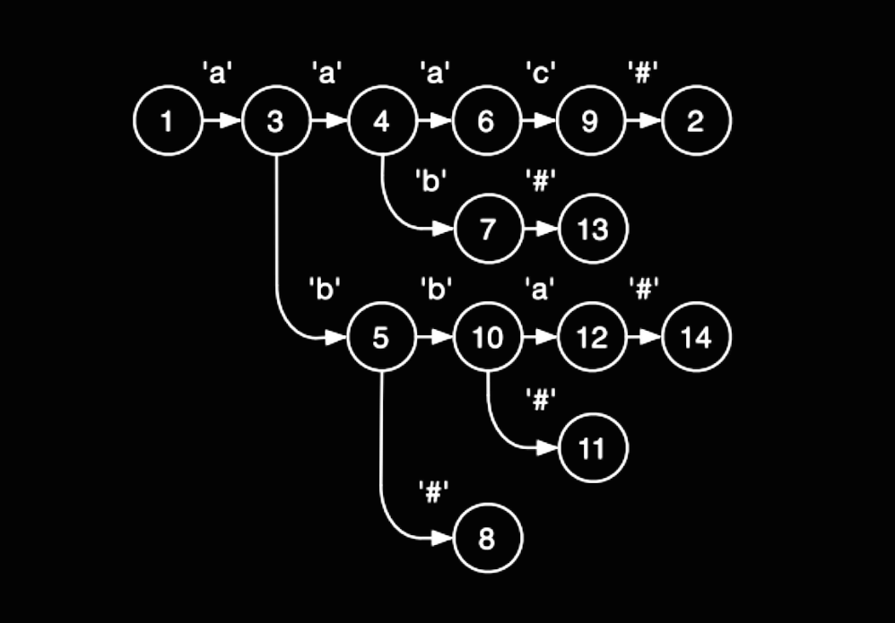
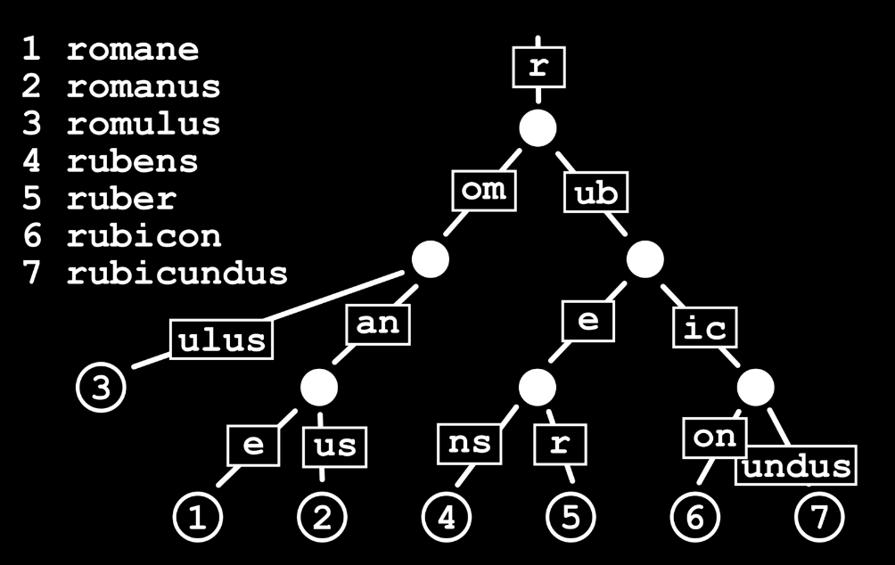
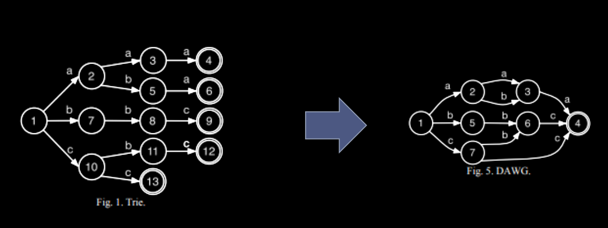

<!doctype html>
<html>
<head>
    <meta charset="utf-8">
    <meta name="viewport" content="width=device-width, initial-scale=1.0, maximum-scale=1.0, user-scalable=no">

    <title>Advanced Data Structures 1</title>

    <link rel="stylesheet" href="css/reveal.css">
    <link rel="stylesheet" href="css/theme/black.css">

    <!-- Theme used for syntax highlighting of code -->
    <link rel="stylesheet" href="lib/css/zenburn.css">

    <!-- Printing and PDF exports -->
    <script>
        var link = document.createElement('link');
        link.rel = 'stylesheet';
        link.type = 'text/css';
        link.href = window.location.search.match(/print-pdf/gi) ? 'css/print/pdf.css' : 'css/print/paper.css';
        document.getElementsByTagName('head')[0].appendChild(link);
    </script>
    <style>
        .info {
            display: inline-block;
        }

        .textclass {
            float: left;
            width: 500px;
            height: 227px;
            line-height: 227px;
        }

        .imageclass {
            float: right;
            width: 200px;
            height: 227px;
        }
    </style>
</head>
<body>
<div class="reveal">
    <div class="slides">
        <!-------------------------------------------------------------------------------------------------->
        <section data-markdown="" data-background="img/ads-00-background.png">
            <script type="text/template">
                # Advanced data structures
                ## part 1
                <div class="fragment fade-up info">
                    < class="textclass">Nick Linker :: nlinker -> gmail -> com</span>
                    
                </div>
                nlinker.github.io/presentations/06_advanced-data-structures-1
            </script>
        </section>

        <section data-markdown="">
            <script type="text/template">
                ### Classification
                1. _Ephemeral_ - changes to DS destroy all past info
                2. _Partial persistence_ - changes to most recent version, query to all past versions
                3. _Full persistence_ - changes to any version allowed, version tree
                4. _Confluent persistence_ - versions form arbitrary DAG
                5. _Functional_ - data structure immutable (arbitrary DAG?)
            </script>
        </section>

        <section data-markdown="">
            <script type="text/template">
                ### Trie
                
                `{aaac,aab,ab,abb,abba}`
            </script>
        </section>

        <section data-markdown="">
            <script type="text/template">
                ### Compact trie
                
            </script>
        </section>

        <section data-markdown="">
            <script type="text/template">
                ### Compact trie, DAWG
                `{aaa, aba, bbc, cbc, cc}`
                
            </script>
        </section>

        <section data-markdown="">
            <script type="text/template">
                ### PATRICIA trie
                A = [`a`=00, `b`=01, `c`=10, `d`=11]
                dad = 110011, dab = 110001, cab = 100001
                root ->

                
            </script>
        </section>


        <section data-markdown="">
            <script type="text/template">
                ### Compact trie
                
            </script>
        </section>

        <section data-markdown="">
            <script type="text/template" >
                
            </script>
        </section>

        <!-------------------------------------------------------------------------------------------------->
    </div>
</div>

<script src="lib/js/head.min.js"></script>
<script src="js/reveal.js"></script>

<script>
    // More info about config & dependencies:
    // - https://github.com/hakimel/reveal.js#configuration
    // - https://github.com/hakimel/reveal.js#dependencies
    Reveal.initialize({
        dependencies: [
            {src: 'plugin/markdown/marked.js'},
            {src: 'plugin/markdown/markdown.js'},
            {src: 'plugin/notes/notes.js', async: true},
            {
                src: 'plugin/highlight/highlight.js',
                async: true,
                callback: function () { hljs.initHighlightingOnLoad(); }
            }
        ]
    });
</script>
</body>
</html>
